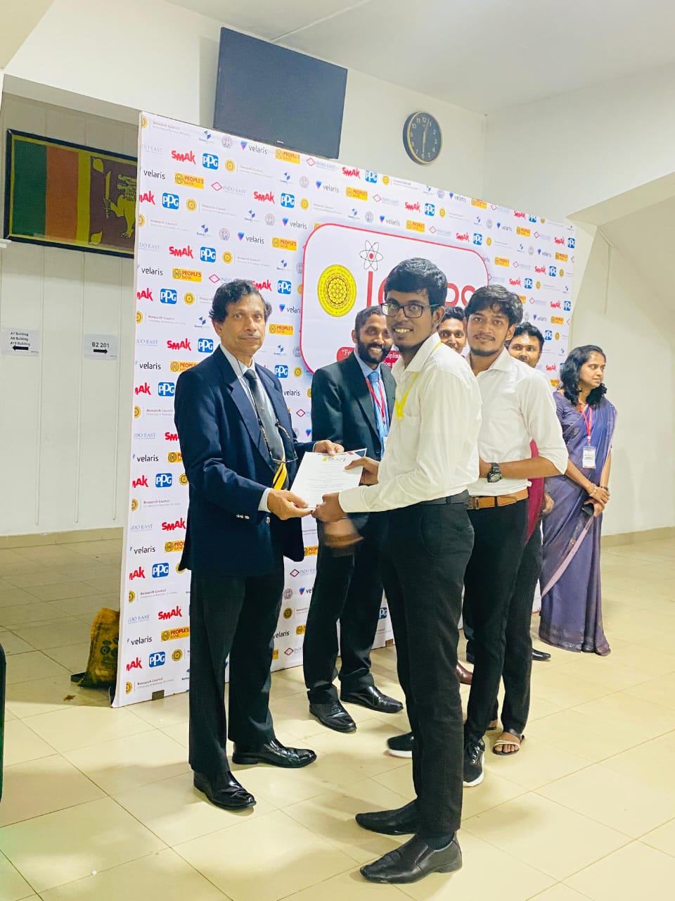

Welcome to My Personal WebpageI'm Thishanth Nagarajah, a passionate student in Physics and Electronics. |
I am a third-year Physics and Electronics undergraduate at the University of Kelaniya. Currently leading a solar cell research project, I specialize in Python application development and Arduino programming. As a leader and presenter, I proudly achieved first runner-up in a poster presentation competition. Passionate about programming, electronics, and innovative software development.
|
 |